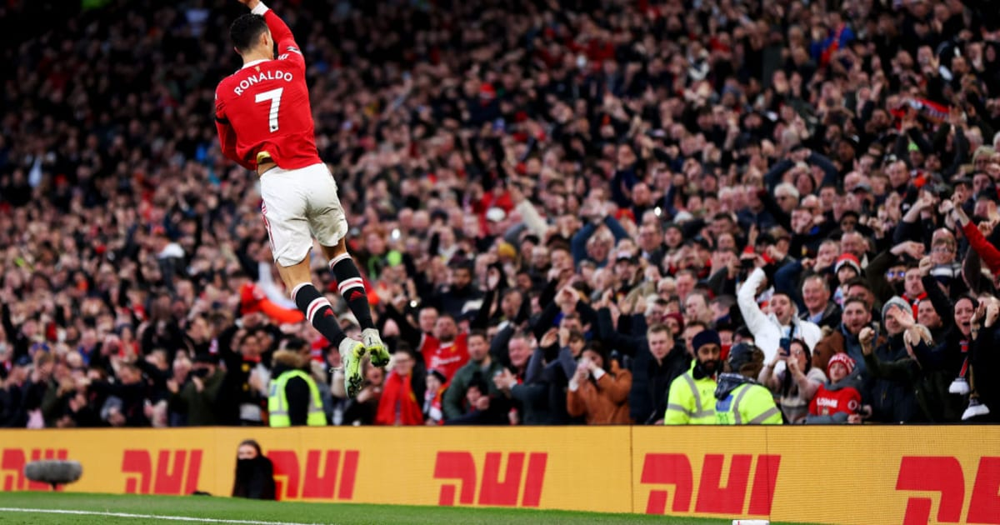

Shirt Number Sagas — Seizing the No.7
Taking Beckham's 7: When Ronaldo signed for United in 2003, Ferguson personally pressed the No.7 shirt vacated by Beckham's departure into his hands. The number, carrying the legacies of George Best, Bryan Robson, Cantona and Beckham, was from then on bound to 'Cristiano Ronaldo' — and the CR7 brand was born.
The 9 at Real: Yet when he moved to Real Madrid in 2009, Ronaldo had to wear No.9 — because the iconic 7 still belonged to captain Raúl González. Until this Real living legend retired, Ronaldo could not inherit the sacred 7.
Forcing Raúl out?: In 2010 Raúl left sadly for Schalke 04, and Ronaldo 'naturally' took the 7. But voices always questioned: was Raúl's departure natural decline, or the result of the club and Ronaldo jointly forcing him out? The truth of that handover remains debated.
Cuadrado forced out at Juve: After moving to Juventus, Ronaldo staged another 'number-grab' — original 7 owner Cuadrado was forced to give it up and take another number. Though the Colombian was outwardly 'willing', this superstar-privilege squeezing of an old hand stirred quiet dressing-room discontent.
The narcissism behind the 'No.7 faith': Ronaldo's fixation on the 7 has long transcended an ordinary shirt number, becoming a near-religious faith. But when a digit turns into a personal totem and others must give way for it, the overbearing self-centredness is hard to hide.
The commercial logic of the number empire: At root, CR7 is not just a shirt number but a multi-billion-dollar commercial brand. Every 'number-grab' is a protective expansion of brand assets. The number is the business — perhaps the truest underlying motive of Ronaldo's No.7 obsession.
Verdict: Cristiano has turned the No. 7 shirt into his personal and commercial signature. But the lengths he went to seize the 7 at each club (Juventus above all) reveal an obsession with controlling his image.